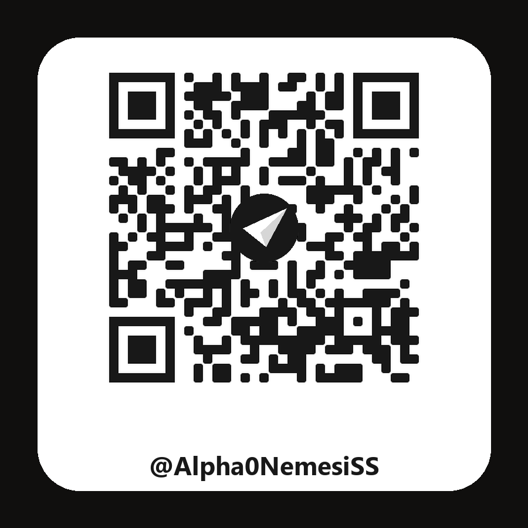

connecting…
Tuning library
System Report
Safety net
Undo
Every change is journaled before it is written. Reverting replays the journal — you return to the state before the first application, not the last one.
Diagnostics
Engine log
The last messages from the tuning engine. Handy when reporting a bug.
Contact
Talk to the builder.
Found a bug, a missing tweak, or a tweak that should not be there? Want Bloodlust tuned for your own machine? Scan the QR with your phone or open the handle directly — it lands straight in my Telegram.
Handle: @Alpha0NemesiSS
